Results
Text · three-way (BERT · Gemini · Grok)
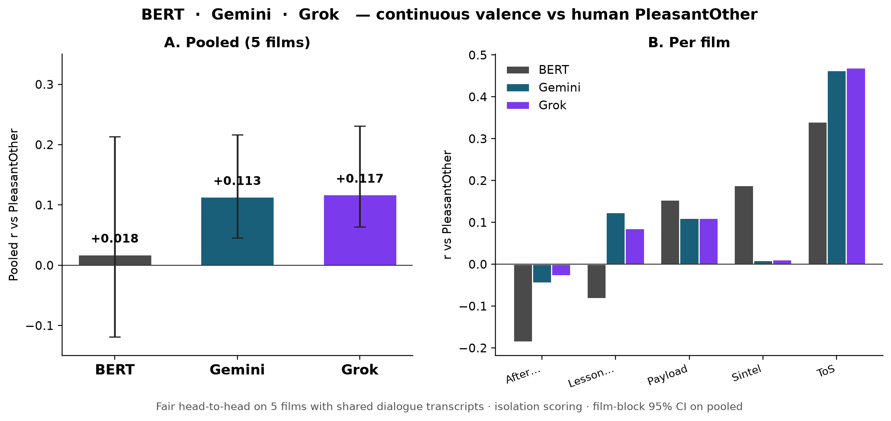
Isolation scoring (one dialogue segment → valence → 1 Hz). Fair head-to-head uses the 5 films with segment transcripts in-repo. Gemini/BERT also have 12-film tables (Grok lacks transcripts for the other 7).
| Scope | Model | Item | pooled r | 95% film-block CI | films |
|---|---|---|---|---|---|
| Fair 5-film | BERT | PleasantOther | +0.018 | [−0.119, 0.213] | 5 |
| Fair 5-film | Gemini | PleasantOther | +0.113 | [0.045, 0.217] | 5 |
| Fair 5-film | Grok | PleasantOther | +0.117 | [0.064, 0.231] | 5 |
| Full 12-film | BERT | PleasantOther | +0.013 | [−0.063, 0.081] | 12 |
| Full 12-film | Gemini | PleasantOther | +0.211 | [0.134, 0.258] | 12 |
| Full 12-film | Gemini | Happiness | +0.188 | [0.127, 0.243] | 12 |
| Fair 5-film | Grok | Happiness | +0.135 | [0.004, 0.327] | 5 |
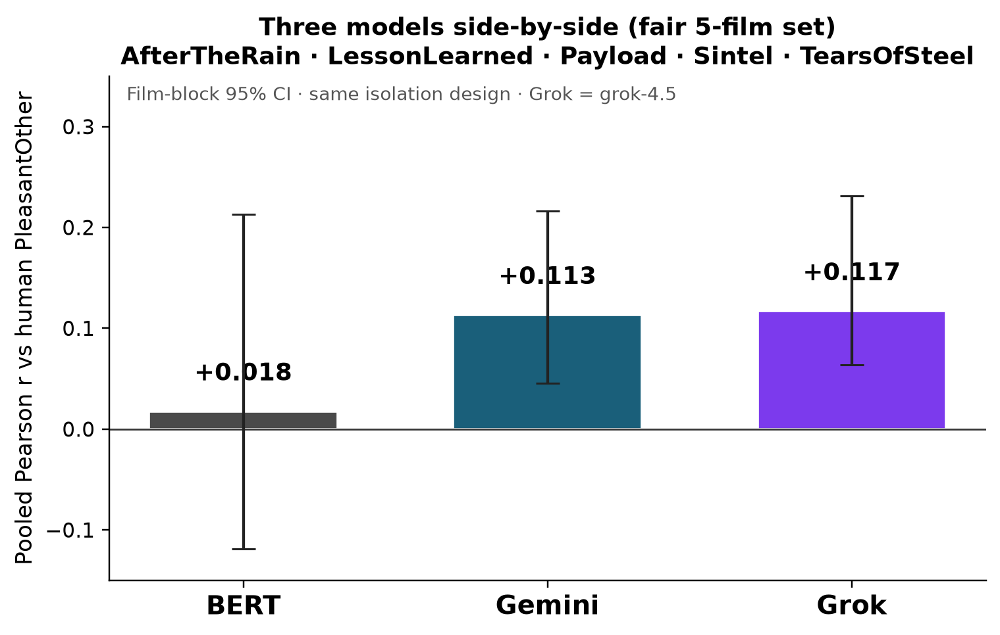
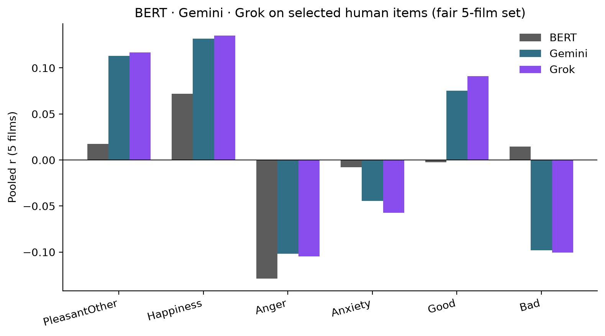
Text · multi-item agreement (detail)
Pooled Pearson r; 95% CI from film-block bootstrap. Switch models in Explore.
| Model | Item | pooled r | 95% CI | films |
|---|---|---|---|---|
| Gemini | PleasantOther | +0.211 | [0.134, 0.258] | 12 |
| Grok | PleasantOther | +0.117 | [0.064, 0.231] | 5 |
| BERT | PleasantOther | +0.013 | [−0.063, 0.081] | 12 |
| Gemini | Happiness | +0.188 | [0.127, 0.243] | 12 |
| Grok | Happiness | +0.135 | [0.004, 0.327] | 5 |
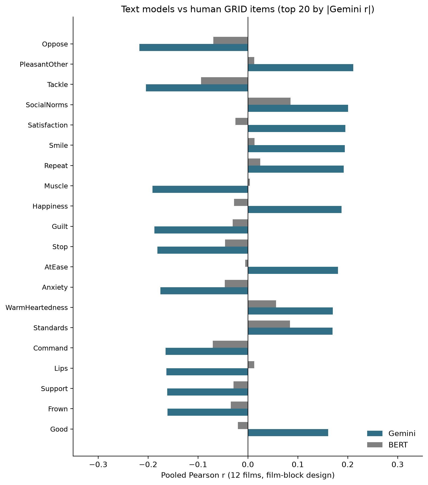
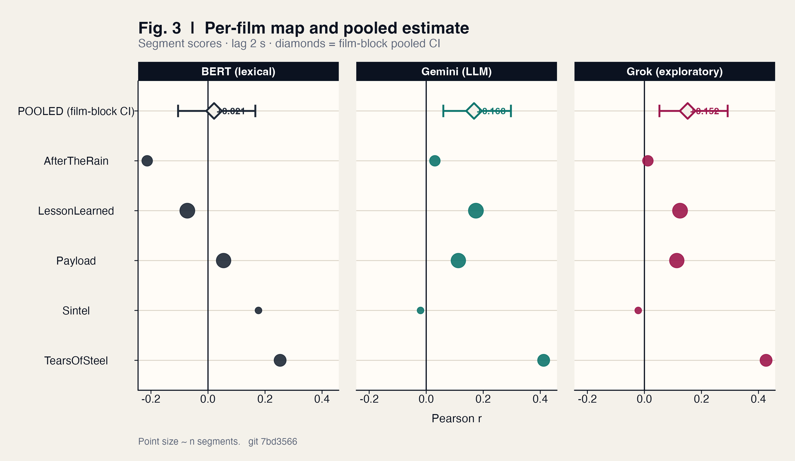
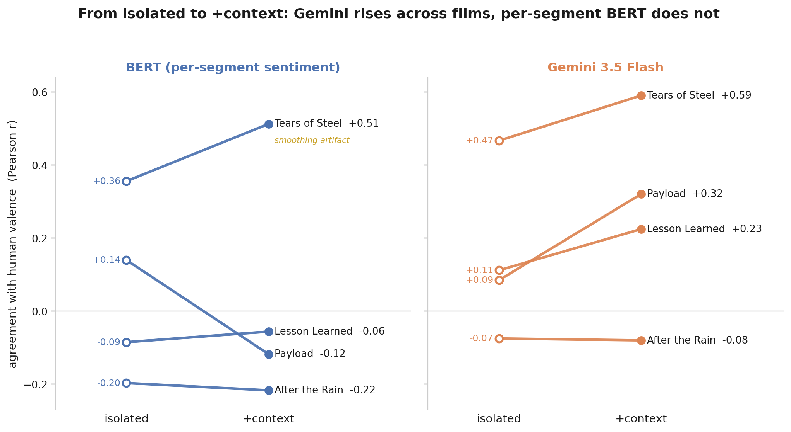
Brain · occipital controlled null
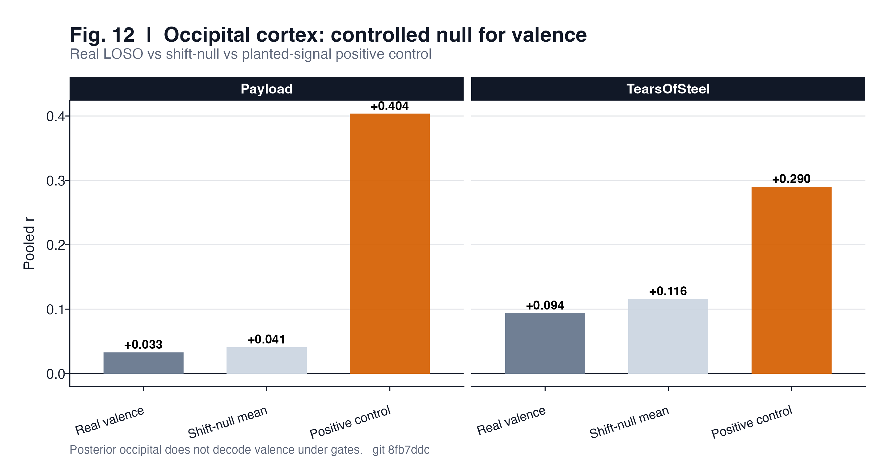
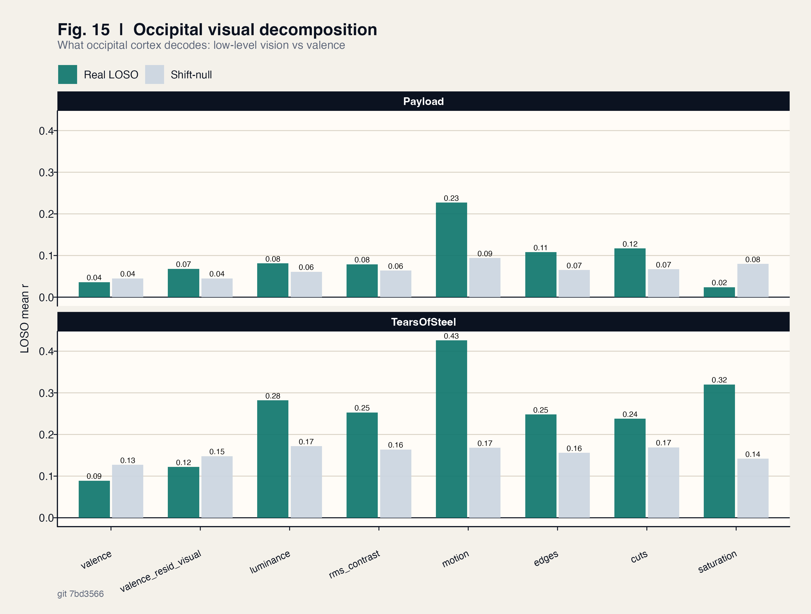
Brain · affective ROIs (PleasantOther)
| ROI | Film | real | null±sd | Verdict |
|---|---|---|---|---|
| network | Payload | +0.067 | +0.004±0.034 | DECODES |
| insula | Payload | +0.082 | +0.010±0.014 | DECODES |
| vmPFC | Payload | +0.056 | −0.000±0.025 | DECODES |
| amygdala | Payload | +0.070 | −0.007±0.021 | DECODES |
| network | TearsOfSteel | +0.058 | +0.092±0.028 | null |
| insula | TearsOfSteel | +0.023 | +0.066±0.038 | null |
| vmPFC | TearsOfSteel | +0.083 | +0.080±0.044 | null |
| amygdala | TearsOfSteel | −0.057 | +0.010±0.028 | null |
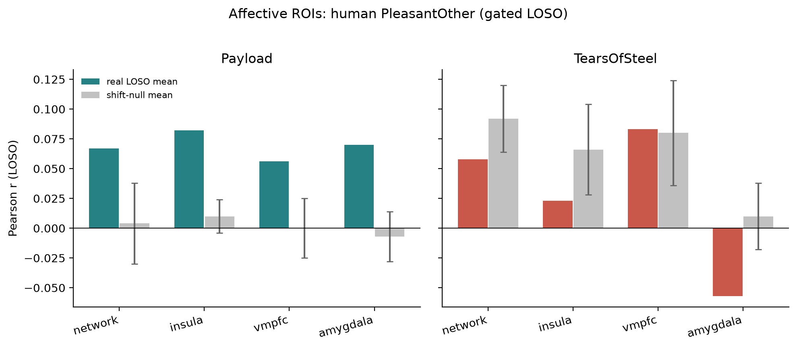
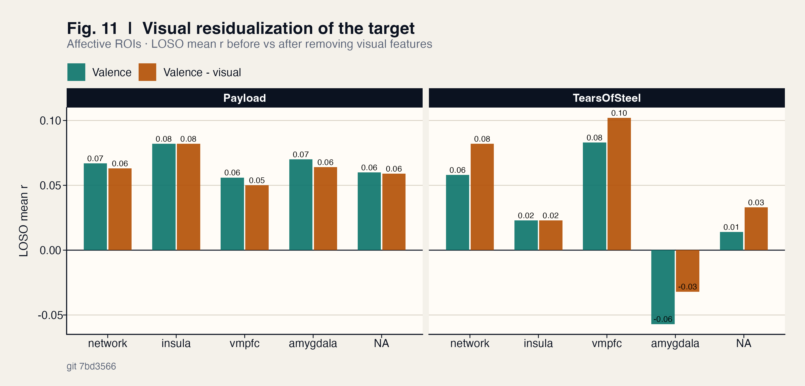
Brain · multi-item hit rates
| ROI | Film | DECODES | rate |
|---|---|---|---|
| network | Payload | 30/50 | 60% |
| network | TearsOfSteel | 5/50 | 10% |
| insula | Payload | 11/18 | 61% |
| vmPFC | Payload | 12/18 | 67% |
| amygdala | Payload | 13/18 | 72% |
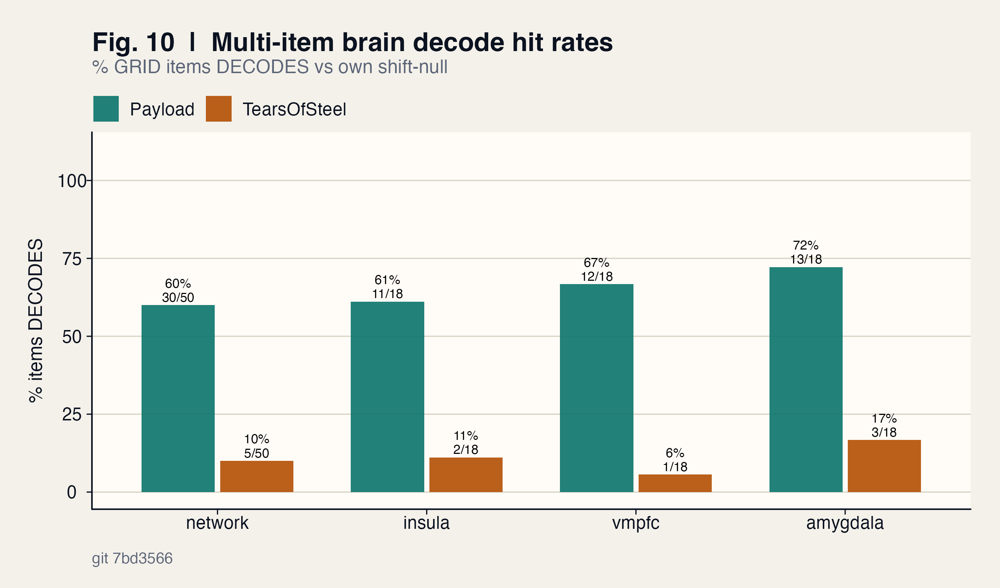
Physio & multimodal (supporting)
Subject-mean RESP shows the strongest coupling to several consensus series; HR/EDA mixed. Tears of Steel audio energy tracks arousal-like items (e.g. IntenseEmotion ≈ +0.47, Calm ≈ −0.52); text still owns valence on that film. Payload audio not yet local (experiment cut missing).
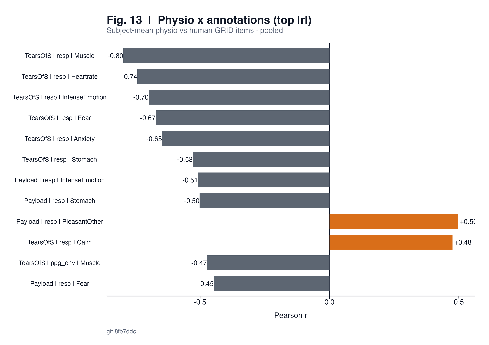
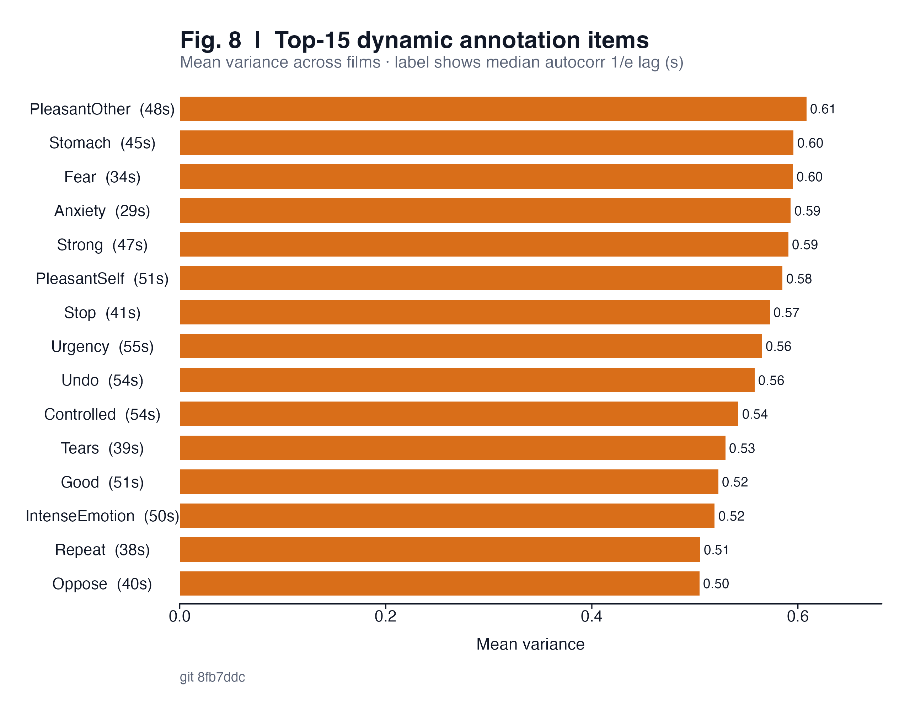